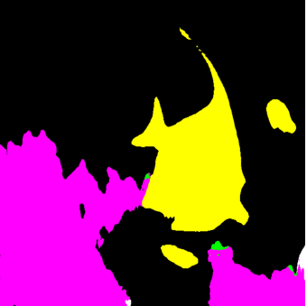
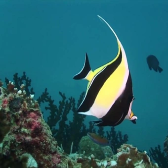
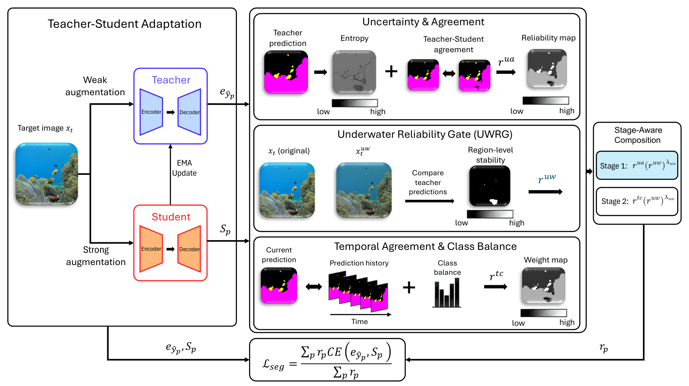
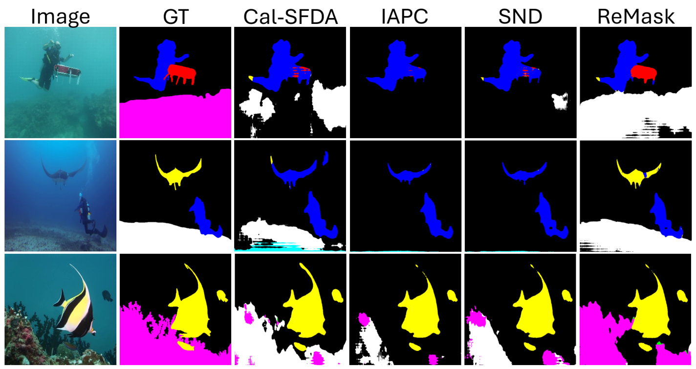

Start with uncertainty
and agreement.
Use prediction uncertainty and agreement between teacher and student while useful prediction history is still limited.
Uncertainty–agreement reliabilitySOURCE-FREE UNDERWATER SEMANTIC SEGMENTATION
Manuscript under review
Adapting to new underwater conditions with a trained model and unlabeled images.
No access to the original training data. No new pixel-level training labels.
FROM IMAGES TO PIXEL LABELS
Water, depth, and illumination change how underwater scenes look. ReMask helps a previously trained model adapt by learning which of its own predictions to trust.
Select a label to highlight its predictions on the original image.
SUIM test example · Fish and reef


Input imageReMaskCompare the input image with the ReMask prediction.
01 / THE PROBLEM
Semantic segmentation assigns a class to every pixel, helping underwater robots and monitoring systems distinguish fish, divers, reefs, and the sea-floor. A model trained on one dataset can struggle on another when color, visibility, and lighting change.
Labeling every new environment is costly, and the original training data may be unavailable. We study source-free unsupervised domain adaptation (SFUDA): adapt using only the trained model and unlabeled images from the new environment.
Knowledge from a labeled source dataset
New underwater conditions, no training labels
Learn from predictions,
weighted by reliability
Pixel-level predictions on the target domain
THE CENTRAL CHALLENGE
Without target training labels, the model uses its own predicted labels as supervision. Under a domain shift, those predictions can be wrong. Repeatedly trusting them can reinforce the errors — so which predictions should guide adaptation, and when?
02 / THE IDEA
Early predictions and later predictions offer different evidence.
ReMask aligns the reliability signal with the adaptation stage.
Use prediction uncertainty and agreement between teacher and student while useful prediction history is still limited.
Uncertainty–agreement reliabilityOnce adapted to the target, use consistency over time and class-distribution correction to refine supervision.
Temporal–class reliability
Semantic segmentation of underwater imagery is fundamental to numerous marine applications, including ecological monitoring, underwater robotics, and infrastructure inspection. Source-free unsupervised domain adaptation (SFUDA), which adapts a source-trained segmentation model using only unlabeled target data, offers a practical solution for underwater semantic segmentation. However, existing SFUDA methods often struggle in underwater environments because of severe domain shifts caused by wavelength-dependent light attenuation, scattering, water properties, depth variations, and non-uniform illumination.
To address these challenges, we propose ReMask, a stage-aware reliability weighting framework that assigns continuous pixel-level reliability weights throughout a two-stage adaptation process. We further introduce the Underwater Reliability Gate, which measures prediction stability under an attenuation–backscatter perturbation tailored to underwater image formation. Extensive experiments on two underwater SFUDA settings demonstrate that ReMask consistently improves the transferability of pre-trained segmentation models and achieves state-of-the-art performance.
03 / THE EVIDENCE
Instance, salient-instance, and semantic annotations are harmonized
into eight classes for UIIS → SUIM and USIS10K → SUIM.
over the best compared baseline
over the best compared baseline
evaluating the stage-aware formulation
| Method | UIIS → SUIM | USIS10K → SUIM |
|---|---|---|
| Cal-SFDA | 44.16 | 45.90 |
| SFMIM | 40.26 | 37.90 |
| UOTSL | 42.04 | 43.57 |
| SND | 42.88 | 44.48 |
| TT-SFUDA | 43.90 | 44.67 |
| IAPC | 41.54 | 44.54 |
| ReMask (Ours) | 49.82 | 50.30 |
Reading the results. mIoU measures overlap between predicted and reference regions; higher is better. Underwater baselines are the paper’s reimplementations under the shared setup. Values are single-run results. GTA5 → Cityscapes comparisons use results reported in the corresponding papers.
On UIIS → SUIM, adaptation takes 6.68 s/batch versus SND’s 9.05 s/batch: a 26.2% reduction under the paper’s setup. ReMask inference takes 18.24 ms/image.
04 / A CLOSER LOOK
Compare the actual masks against ground truth and other methods.

Scope. The underwater study uses two source datasets and one shared target dataset. Testing additional target environments is needed to establish broader generalization. Target annotations support evaluation; target training labels stay out of adaptation gradients.
EXPLORE THE IMPLEMENTATION
PyTorch code, source training, label harmonization,
two-stage adaptation, and evaluation.